Custom Song Structure Tutorial
The default mode for Abundant Music is to generate the song structure randomly by sampling from a predefined set of song structures. This sometimes gives you what you want but often you want to have much more control over the result.
This tutorial will show you how to create custom song structures.
First Verse
First, make sure that you are logged in by opening the "Account" window. Then, open the "Song Settings" window and select the "Details" tab. It should look something like this:
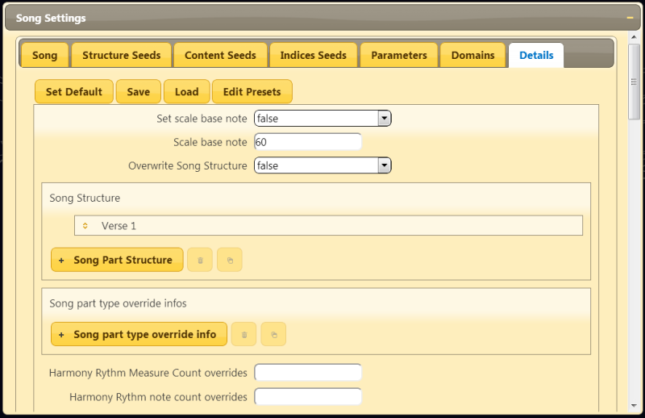Now, set the "Overwrite Song Structure" option to "true" to override the default random one. Also, Abundant Music sometimes inserts an intro and an end. Since we want complete control in this case, go to the "Parameters" tab and set "Song Intro Probability" and "Song End Probability" to 0. It should now look like follows:
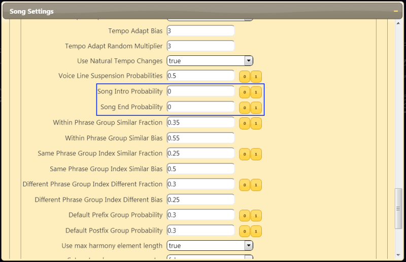Go back to the "Details" tab and click on the first item in the "Song Structure" list. It should only be a single item with a "Verse 1" song part. If this isn't the case, click on the "Set Default" button at the top left in the "Details" tab.
The "Verse 1" item expands and you should see its properties like follows:
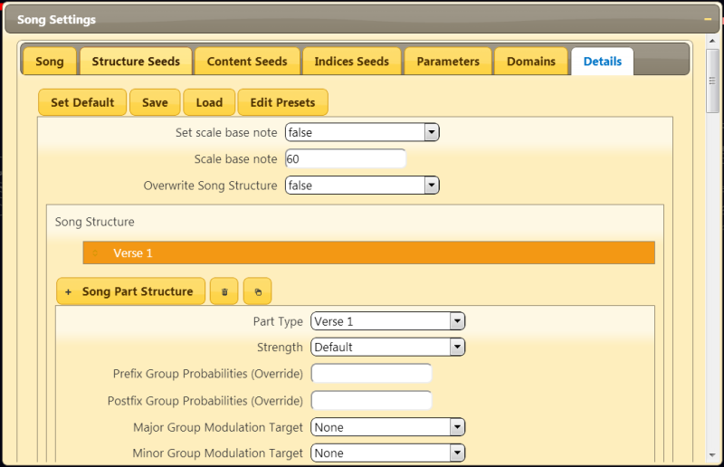Make sure that you only have one "Verse 1" in the Song Structure list and set "Override Song Structure" to true. Select the Verse 1 and turn off intro and end. "Song Intro Probability" "Song End Probability"
Set "Prefix Group Probabilities (Override)" and "Postfix Group Probabilities (Override)" to 0. These control automatic inserts of short phrases that introduce or end phrase groups. Create a pure harmony without melody by manually setting render amounts for melody, inner 1, inner 2, bass and percussion. Set the render amounts between 0 and 1. 0 means silence and 1 means full velocity and also more notes such as doublings. Turn off melody by setting "melody render amount" to 0. You should now have something like this:
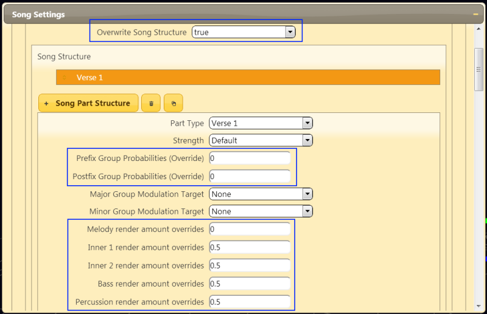Press the "Compose" button at the top of the page to compose "Verse 1". You should then see a single phrase in the background. Mine looks like this:
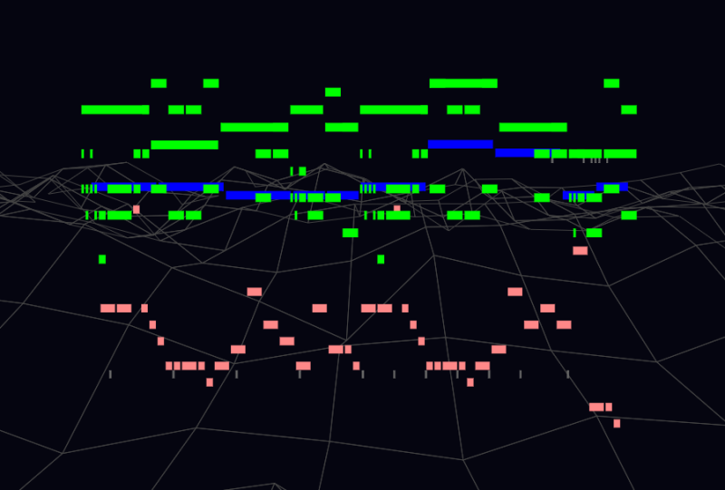You might want to listen to the first verse now. If you don't know how to do that, go to the First Tutorial or the more in-depth Render and Play Songs Tutorial.
Second Verse
Add another Verse 1 by pressing the "+ Song Part Structure" button. Make sure that it is another "Verse 1".
This verse should be stronger than the first so make the melody render amount greater than 0 and set everything else a bit stronger as well. Also, disable the prefix and postfix groups by setting those probabilities to zero.
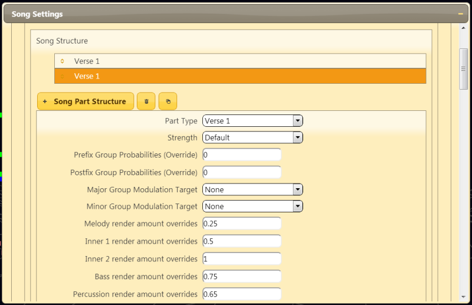Now, press the "Compose" button to see the result. For me, the composition looks as follows:
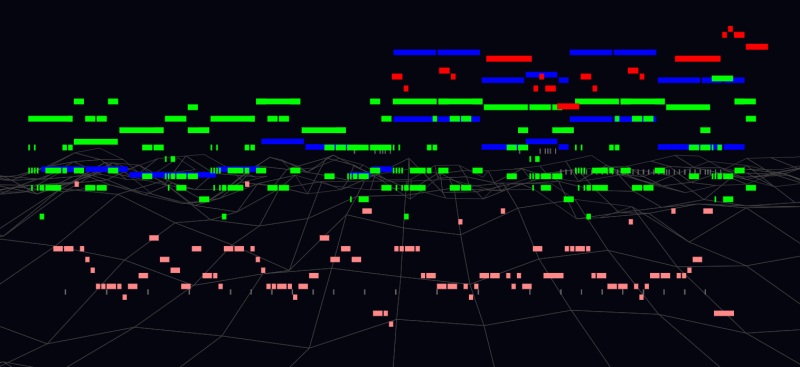Take some time to experiment with different main seeds and sub-seeds to get a melody and harmony that you like.
Overriding Song Part Type Properties
The two "Verse 1" are connected which means that they have a lot in common when it comes to phrase structure etc. Now we are going to change both "Verse 1" by adding a "Song part override info".
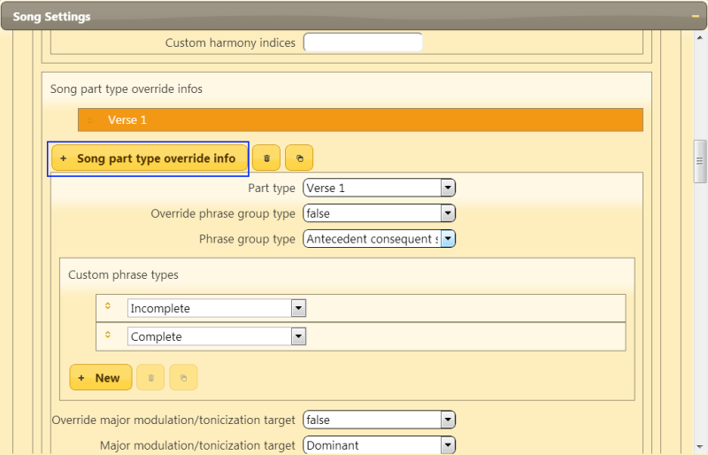Set "override phrase group type" to true. Then you can change the phrase group type to something of your liking. You can even create your own, custom phrase group.
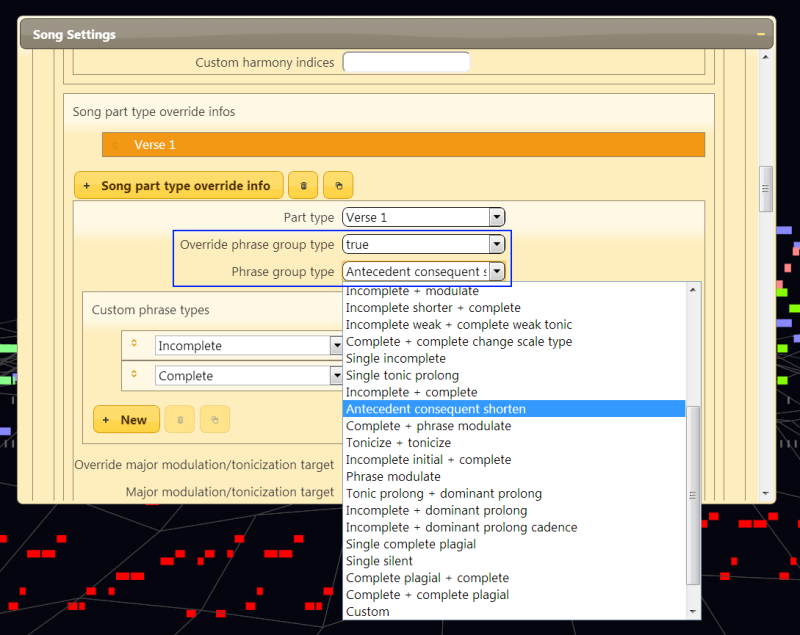Chorus
Now it is time to add the Chorus! Add two "Chorus 1" to the structure and set the prefix and postfix probabilities to zero except for the first chorus' that you set to 1. Now a short prefix group will be added before the first chorus, which sometimes sounds good ;) Chorus have a default strength of "Very Strong" which you can keep as it is.
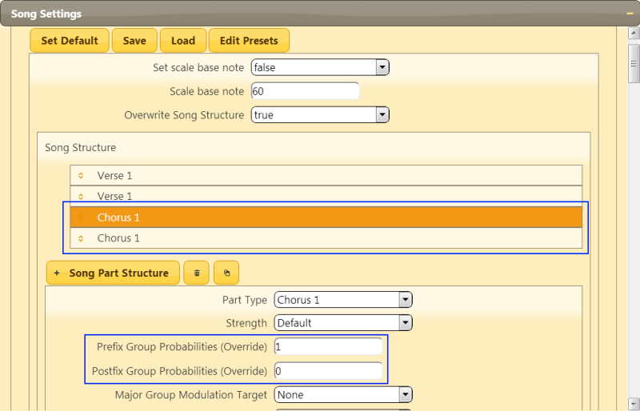Listen to the song now! Once again, you can very easily create new variants by changing the main seed, any sub-seed or parameters and get different songs with the same structure.
Final Touch
After the double chorus, we are going to add a single measure with only bass. Add a "Misc 1" group to the song structure and set all render amounts to 0, except the bass. Also set "Harmony total length override" to 1 and "Harmony rythm count overrides" to 4.
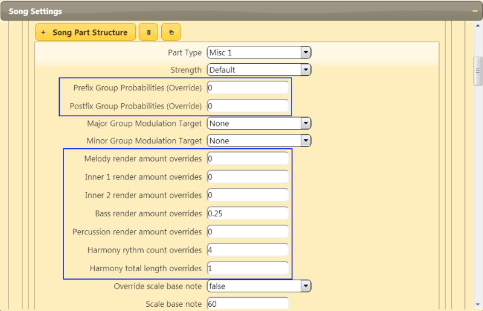Finally, add two "Verse 1" to make a nice connection to the first part of the song. Here are some songs with different main seeds, all using the same structure:
Now it is time for you to complete the song structure! You might want to add another double chorus or surprise with a bridge section. Maybe add a custom intro and/or end? A drum solo or pure harmony section somewhere perhaps?
Whatever you do, the important thing now is that you now know how to create your own song structure and override the defaults.
Happy composing!